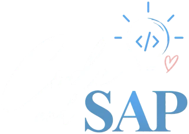

SAP SuccessFactors EC
Estructuras organizativas, datos de empleados, objetos MDF, reglas de negocio, eventos y procesos de Employee Central.
Employee CentralMDFRBP
Consultar
servicio ↗

INGENIERÍA · TECNOLOGÍA · INNOVACIÓN
Ingeniera de Sistemas enfocada en SAP SuccessFactors EC, integraciones SAP CPI, desarrollo web y automatización. Tecnología que simplifica procesos y crea oportunidades.

TECNOLOGÍAS CON LAS QUE TRABAJO
Ingeniera de Sistemas
Me apasiona conectar personas, procesos y tecnología. Desarrollo mis conocimientos en SAP SuccessFactors Employee Central e integraciones con SAP Integration Suite (CPI), y exploro soluciones web y automatizaciones para negocios.
Este espacio reúne mi perfil, servicios, proyectos y próximos cursos. Aquí podrás conocer lo que hago y conversar sobre nuevas ideas.
Soluciones que conectan tecnología y necesidades reales.
Estructuras organizativas, datos de empleados, objetos MDF, reglas de negocio, eventos y procesos de Employee Central.
Interfaces y flujos de integración con SAP CPI, OData, REST, SOAP y transformación de datos.
Landing pages, portafolios, sitios informativos y experiencias web adaptadas a móviles.
Formularios, herramientas internas y soluciones web para organizar procesos de negocios.
Flujos con n8n, integración de herramientas, gestión de solicitudes y automatización de tareas repetitivas y procesos de redes sociales mediante servicios autorizados.
Espacio para mostrar proyectos reales y ejercicios de práctica. Los ejemplos actuales son demostrativos.
Ejemplo conceptual de lectura y transformación de datos de Employee Central.
OData · CPI · XMLPropuesta de sitio moderno para presentar servicios y captar consultas.
HTML · CSS · JavaScriptEjemplo de conexión entre formularios y notificaciones de un emprendimiento.
n8n · WorkflowsPróximamente: formación por niveles para desarrollar nuevas habilidades.
Un recorrido progresivo para aprender y practicar inglés desde los fundamentos.
Contenidos introductorios y prácticos para conocer Employee Central.
Cuéntame tu idea, proyecto o consulta profesional. Me encantará conocerla.